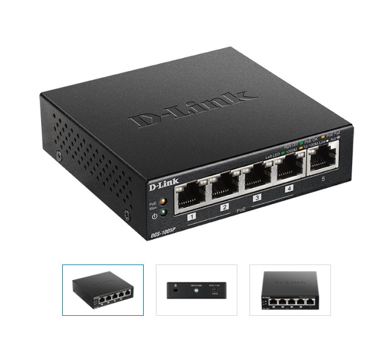
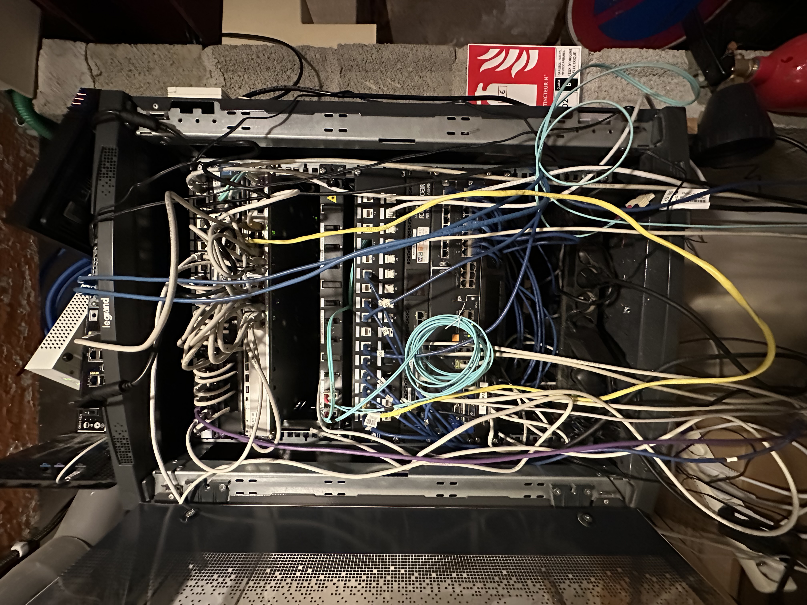
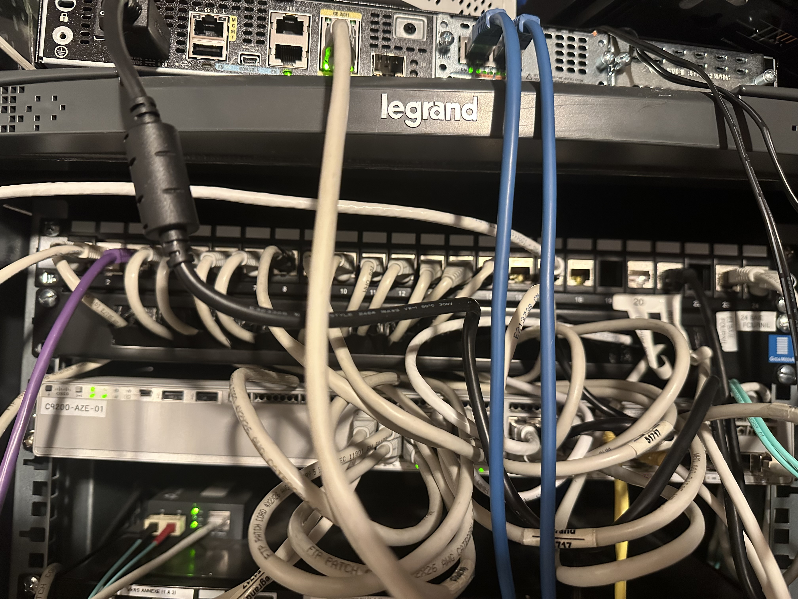
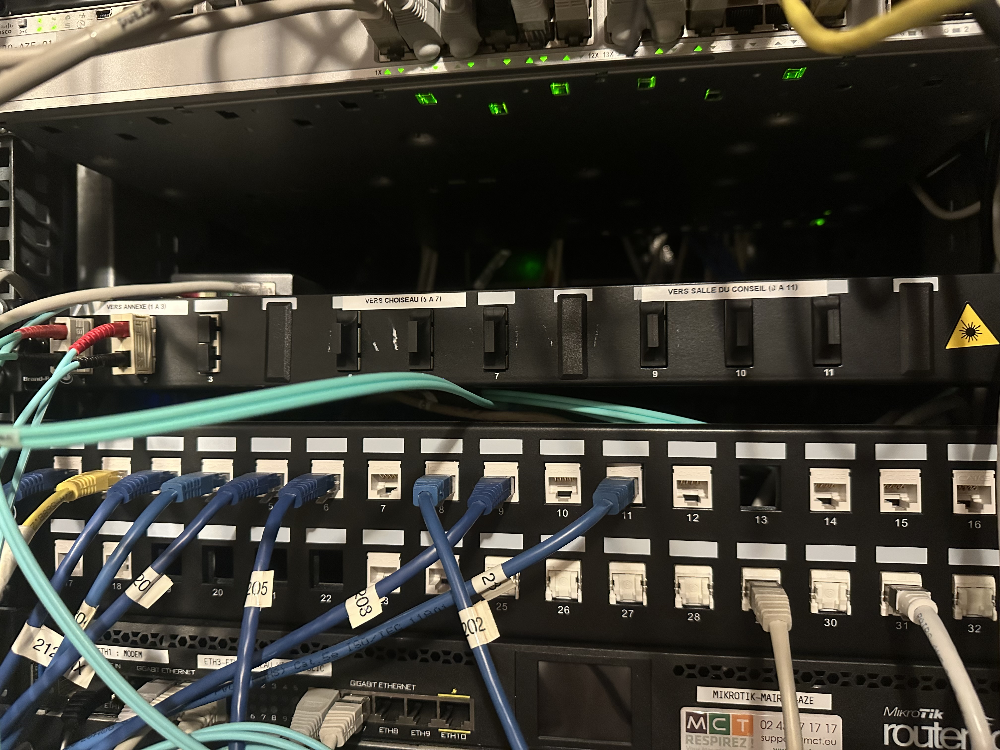
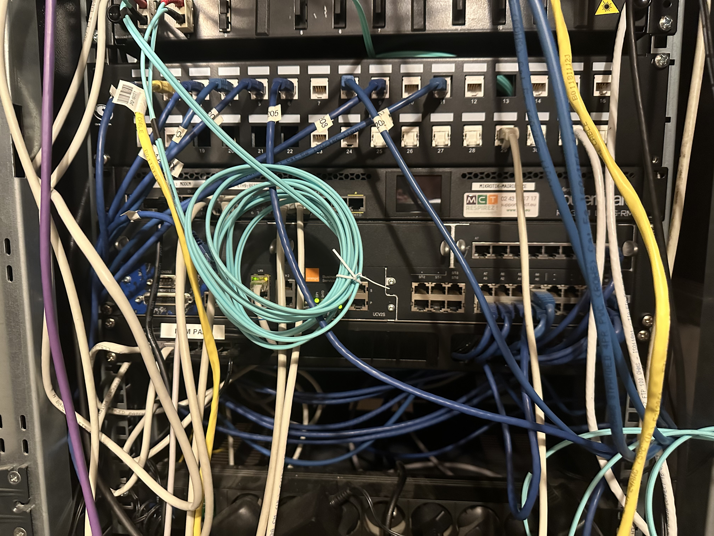
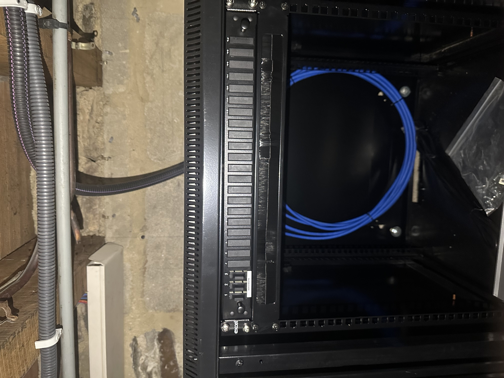
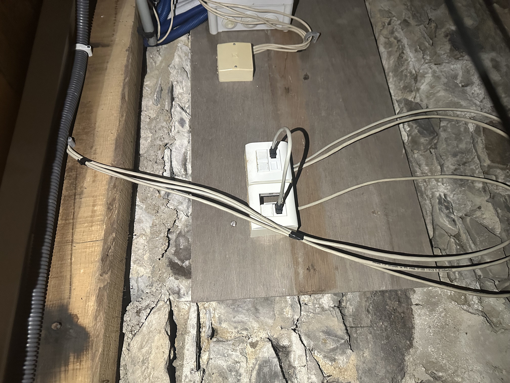
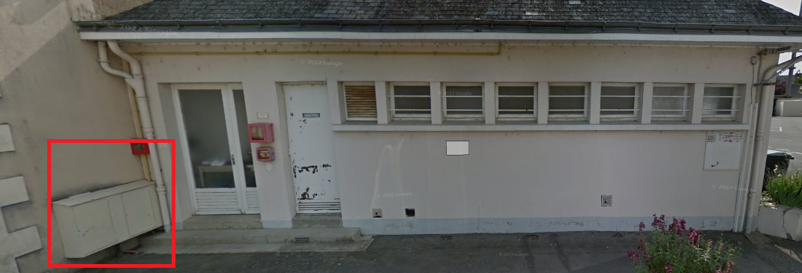
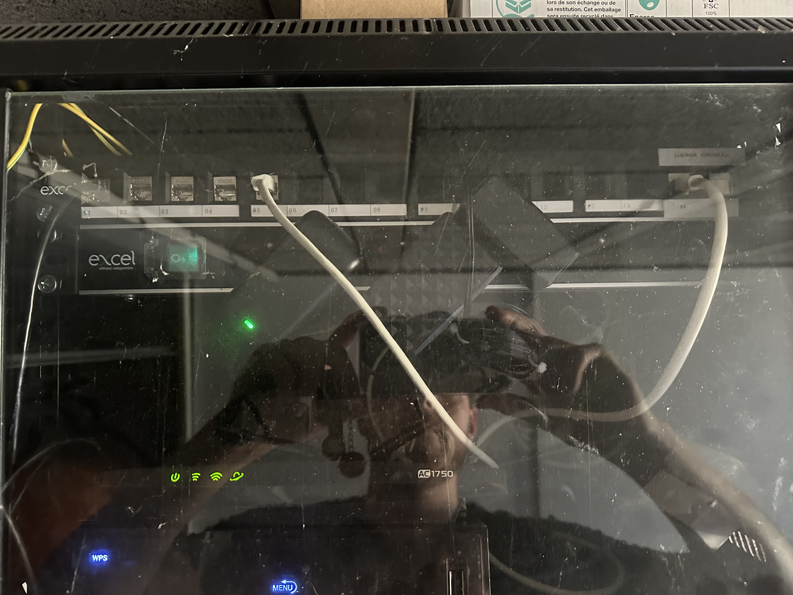

Ce cahier des charges définit les exigences et spécifications pour l'installation d'un réseau Wi-Fi public dans notre territoire. Les éléments suivants doivent être respectés :
Nombre d'utilisateurs : 50 utilisateurs en simultané sur le réseau.
Équipements utilisés : Utilisation du pack CloudSpot de type Nano.
Emplacement : Définir les emplacements des émetteurs du Wi-Fi.
Formulaire de connexion : Similaire au style du Wi-Fi4EU (Nom, Prénom et plus de 15 ans).
Après la connexion : Les utilisateurs seront renvoyés sur le portail des actualités de Château-Gontier-Sur-Mayenne.
Accessibilité : Le Wi-Fi doit être accessible depuis n'importe quel appareil disposant d'une antenne Wi-Fi.
Règles :
Ne pas générer d’interférences avec des services autorisés.
Limiter la puissance maximale des antennes, ne pas utiliser en extérieur les fréquences basses de la bande 5 GHz.
Selon la loi Abeille, « les établissements proposant au public un accès Wi-Fi doivent le mentionner clairement au moyen d’un pictogramme à l’entrée de l’établissement ».
Il faut également respecter des valeurs limites d’exposition du public aux champs électromagnétiques.
Propositions de fonctionnement
Première Solution
Les antennes sont disposées à l'extérieur et se fournissent le réseau Wi-Fi entre elles (comme la disposition au camping de Daon). Cette solution nécessiterait un pack Nano et 5 antennes UniFi. Cependant, elle présente des désavantages :
Dégradations plus importantes à l'extérieur dues aux intempéries.
Réglementations strictes à respecter concernant les fréquences utilisées et la puissance maximale autorisée (100 mW).
Deuxième Solution
Les antennes seraient reliées entre elles à l'aide d'un câble Ethernet. Les antennes seraient à l'intérieur des bâtiments, donc non exposées aux intempéries. Cette solution nécessiterait un pack Nano, 6 antennes UniFi ainsi que 2 switchs. Cependant, elle présente des désavantages :
Complexité pour faire passer des câbles entre les bâtiments (où communiquent-ils déjà ?).
Des switchs supplémentaires, la solution serait plus onéreuse.
Troisième Solution
Similaire à la première solution, mais en disposant les antennes à l'intérieur. Cette solution aurait la même composition que la solution une, mais présente presque les mêmes désavantages, tels que :
Perte du signal au fur et à mesure, puisque celles-ci seraient à l'intérieur, donc le signal aurait plus de mal à passer à l'extérieur.
En raison de l'épaisseur des murs, le signal perdrait en qualité au fil des retransmissions.
Quatrième Solution
Cette solution mélange la première et la deuxième solution. Elle consiste à connecter la Mairie et la salle du conseil.
Cette solution nécessiterait donc le pack Nano, 5 antennes et un switch. Il y a également deux options :
Option 1 : Les antennes sont disposées dehors (on connaît désormais leurs désavantages).
Option 2 : Les antennes sont disposées à l'intérieur (on connaît désormais leurs désavantages). Cette solution demande un switch supplémentaire.
Caractéristiques du Routeur hAP ax²
Routeur hAP ax² de CloudSpot
Pour commencer, le routeur mis en place par CloudSpot dans la solution Nano est le hAP ax² avec ces caractéristiques :
Le routeur a une antenne Wi-Fi intégrée, mais pour un souci de manque d'options de configurations et d'autres finalités, nous allons utiliser des antennes UniFi.
Consommation électrique maximale pour chaque port : 30 W
Température de fonctionnement : 0° à 40°C

Localisation des sites
Veuillez consulter la carte ci-dessous pour voir les emplacements prévus pour les points d'accès Wi-Fi :
Distances des sites d'installation des antennes
La distance théorique la plus longue de cette installation est d'environ 125 m, entre le point le plus éloigné de la Mairie et le point le plus éloigné de l'espace Vulcain.
Démonstration des propositions
Attention, ces simulations ont été effectuées en considérant que tous les murs des bâtiments aient un affaiblissement maximal de 15 dB.
Dans ce tableau, nous comparons les solutions en fonction du prix et de la difficulté :
Solution
Difficulté
Prix (en €)
Solution 1
Moyen
1303
Solution 2
Simple
2039
Solution 3
Difficile
1219
Solution 4_1
Moyen
1426
Solution 4_2
Moyen
1418
La solution choisie est la solution 4_2
J'ai choisi la solution 4_2 pour sa facilité et son prix abordable de 1418 €, hormis quelques détails comme comment passer de la salle Choiseau, de l'espace Vulcain, et de relier la Mairie à la salle du Conseil.
Pour cela, il faudra regarder les fourreaux qui les relient grâce au SIG, à vérifier tout de même, car certains fourreaux ne sont pas notés sur le SIG ; il faudra aller voir sur place.
Aller sur place permettra d'avoir l'emplacement exact des fourreaux, le SIG nous permettra aussi de mieux calculer la longueur du câble à passer.
Les différentes baies
La baie de la Mairie d'Azé




La baie de la salle du Conseil


La baie de salle Choiseau

Le baie de l'espace Vulcain (pas encore de photo)

Installation du routeur
Vérifiez l'autorisation d'accès. Assurez-vous que votre fournisseur d'accès Internet autorise le changement de matériel et l'attribution d'une adresse IP automatique.
Connectez l'appareil à la source d'alimentation.
Connexion au réseau
Ouvrez les connexions réseau sur votre ordinateur. Recherchez le réseau sans fil « MikroTik-... » (le nom exact dépendra du routeur).